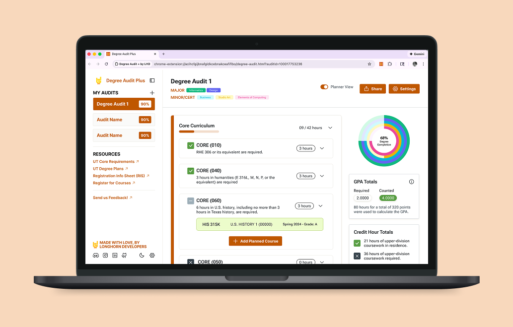

Make progress easy to scan
Turn dense degree requirements into a more visual, intuitive structure so students can understand their standing at a glance.

Many students struggle to make sense of their degree audits.
It’s hard to quickly tell what’s done, what’s still missing, and how future classes might impact graduation. This creates unnecessary stress and often forces students to rely heavily on advising for questions that should be easy to answer on their own.
Make progress easy to scan
Turn dense degree requirements into a more visual, intuitive structure so students can understand their standing at a glance.
Clarify what’s complete and what’s missing
Show students where they are in their plan and how future classes affect graduation so they can plan ahead confidently.
Build confidence, reduce advising load
Create an experience that feels clearer and more trustworthy, so students can answer more questions on their own.
Degree Audit Plus is a browser extension that reimagines UT Austin’s Interactive Degree Audit (IDA). The existing system contains a lot of important information, but it’s dense and hard to scan.
Our goal was to turn that information into something more visual, intuitive, and confidence-building so students can better understand their degree progress and plan ahead.
Right now, we’re finishing high-fidelity screens and handing them off to development. I’ve been working closely with engineers to answer questions, refine interactions, and make sure designs translate smoothly into code.
Once development is further along, we’ll move into user testing with UT students to see whether the interface actually feels clearer, if students feel more confident planning ahead, and where things still feel confusing or overwhelming.
We reviewed UT Austin’s current IDA flows and identified the moments where students struggle to understand requirements, completion, and future impact.
We turned dense audit content into a visual, intuitive experience with clearer progress states, stronger hierarchy, and actionable planning cues.
High-fidelity screens are being finalized and handed off to engineering, with design review ongoing to ensure interaction details translate smoothly into code.